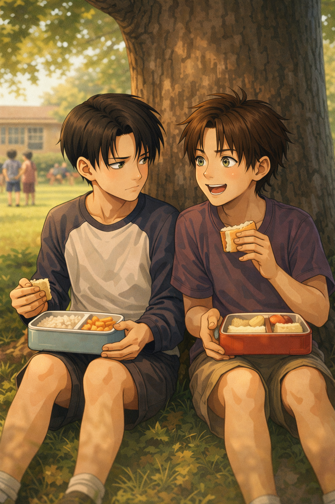

Under the Tree
Levi — POV

Levi liked the tree because it didn’t ask him anything.
It stood at the far edge of the schoolyard, where the grass grew a little taller and the noise thinned into something manageable.
The branches were low. The shade stayed cool. The ground beneath it felt the same every day.
Levi ate there every day.
Alone.
In class, he was the same. Desk by the window. Straight back. Eyes on his work.
He answered when teachers spoke to him. He didn’t when other kids did.
Eren noticed.
Eren noticed because Eren noticed everything — the kid who forgot his pencil, the kid who willingly shared his markers, the one who cried during reading time, the one who laughed too loud and got told to stop.
Levi was the only one who didn’t orbit him. And to Eren, that felt wrong.
“You know you can sit with us, right?” Eren asked one day, half-turned in his seat.
Levi didn’t look at him.
“No.”
Simple.
Eren blinked.
“But Jean brought cookies,” he tried.
“Jean is annoying,” Levi replied.
Eren smiled despite himself.
“Yeah,” he admitted. “That’s fair.”
At lunch, Eren tried again.
The first time, he waited until Levi had already sat down.
He crept up behind the tree, quiet for once — then jumped out.
“Boo!”
Levi startled, soup sloshing dangerously in its container.
He stood up immediately.
And left.
Eren watched him go, mouth open.
“Okay,” he muttered. “Jerk.”
The second time, Eren followed him across the playground, talking the whole way.
“—and then he turns into a giant dog, which makes no sense, but—”
Levi stopped.
“Go away.”
Flat. Sharp.
Eren didn’t stop smiling.
“You don’t have to be mean about it” he tried
“I did.”
Levi walked off.
Eren frowned.
That stung.
For a few days, Eren kept his distance.
He sat with his friends. He laughed. He traded snacks.
But he kept glancing toward the tree.
Levi was always there.
One Tuesday — soup day again — Eren decided to do it differently.
Levi had just sat down when Eren appeared in front of him.
Levi noticed immediately: grass stains on his knees, a leaf stuck to his shoe.
He’d been playing.
Eren dropped down a few feet away. Hands spread in the grass, legs the same, looking at the sky. Not too close. Just there.
“I’m not leaving,” he said. “But because I'm a nice boy I’m not sitting on you either. I could, you know.”
Levi eyed him.
“You’re loud.”
“I've been told,” Eren said. “Today I’m trying something new.”
He opened his lunchbox.
“Soup days suck,” he added. “Jean dropped his again. He made a mess and said “fuck””
“Of course he did.”
Eren lit up.
“Right? He said it was Connie pushing him.”
Levi took a careful spoonful.
He didn’t leave.
Eren noticed that too.
He talked. About recess. About Jean looking like a horse. About how stupid math was.
Levi listened.
Sometimes he answered.
“You don’t have to sit here every day,” Levi said once.
“Are you pushing me again?” Eren replied. “I want to. So I will. Mom says I have a strong temper”
"You don't say" Levi bit back.
Other kids tried to join.
Levi glared. They wouldn't go away, so he stood up.
Eren stood with him.
“I'm definitely the exception,” Eren said lightly.
After that, it was understood.
The tree was Levi’s.
Eren was allowed.
No one else.
One afternoon, Eren leaned back against the trunk, grass still on his pants.
“You know,” he said, “I think I figured it out.”
Levi glanced at him.
“What.”
“You don’t like people,” Eren said. “But me, I'm your favorite”
Levi shrugged.
“You’re still loud.”
Eren grinned.
“Yeah,” he said. “But I’m your loud.”
Levi sighed hard, but didn’t tell him to leave.
He wasn't alone anymore, he smiled to himself.
He had Eren.